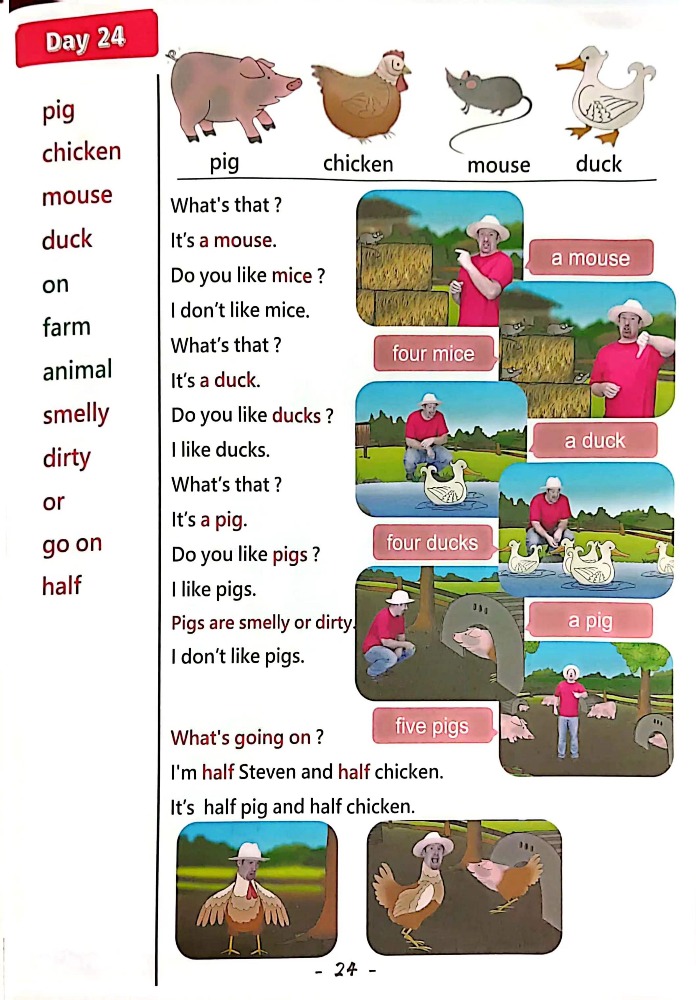

Day 24
Unit 7 · story
教材重点
教材重点依据网盘文件“第三级红色每日打卡全.pdf”，PDF 第 26 页对应 Day 24；以原图为准，避免对图片文字做不可靠的自动识别。
网盘教材重点原图 · PDF 第 26 页对应 Day 24

Unit 7 · story · 5–6岁
like · hello · look · say
Hello, hello, hello, hello, everyone. Hello. Hello.
台词本为机器转写，可能存在识别误差；不等同于视频逐字原声。
详细内容
Part 1 核心词汇
必须掌握 · 4 个Part 2 跟读句型与句型拓展
左侧保留台词本原句，右侧为替换练习；拓展内容不是视频逐字台词。
Hello, hello, hello, hello, everyone. Hello. Hello.
Everyone, hello. Hello.
Everyone say, hello. Everyone.
Pig, chicken, mouse and duck.
Oh, come on, oh, we need a little muggy magic, aprica Debra.
Part 3 台词本全文
来源：第3级台词本 · 024.Wow!Red - Unit 7 'farm' - part 2 story_7_2.pdf。以下保留网盘 PDF 的机器转写文本，仅清理了文件路径页眉和空行。
Hello, hello, hello, hello, everyone. Hello. Hello.
Everyone, hello. Hello.
Everyone say, hello. Everyone.
Pig, chicken, mouse and duck.
Okay, this is chicken, I'll watch the eggs for you, bye, HA, ha,
Oh, come on, oh, we need a little muggy magic, aprica Debra.
I'm breathing up brown, oh, I'm breakfast.
Maggie, where's Maggie She should help me work on the farm, maggie Ho, hey.
Hello, boys and girls to day, I'm on a farm with lots of animals here.
But I can't find Maggie, where is she? Oh, hey, what's that.
Oh look, oh, it's a mouse. It's a mouse, it's a mouse. Oh, I.
Don't like mice, no, do you like mice? Yes,
No, well, if you don't like mice, say with me, I don't like mice. I don't like mice.
I don't like mice or no show, go away, oh, oh, ha, that.
There's something I like.
Hey, look, what is it here It's a duck, oh, say with me it's a duck, it's a duck.
It's a duck, I like ducks, who more ducks, great.
So if you like, ducks, say with me.
I like ducks, come on, I like ducks, and again,
I like ducks so well done, hey, are you hungry here you are.
Oh, do you like pigs?
Yes, no, well, hey come with me, let's see the pigs come on.
Hey, what can you see?
Yeah, pigs, do you like pigs? Yes, then say with me.
I like pigs come on, I like pigs, and again, I like pigs.
But if you don't like pigs because they're smelly or dirty and say with me.
I don't like pigs.
I don't like pigs again. I don't like.
Pigs, oh, but I like pigs, oh, look at this piggy here, maybe he's hungry.
Hey, hello, little Piggy, are you hungry here You are.
/
-
/3/024.Wow!Red - Unit 7 'farm' - part 2 story_7_2.txt[2022/3/29
星期二
6:47:16]
Look, oh, that's not right, no, no, no, look, it's half pig and.
Half chicken. Oh, what's going on? Oh,
Hey,
What's happening today? Oh, no, hey, oh,
Look, look at me, I'm half Steven.
Half chicken, bop, oh, this must be magic. HA, ha,
Maggie Magic. Yeah.
Where is that naughty, naughty bird? Maggie? Maggie?
Maggie.
Open, come on, maggie, what are you doing.
I'm using my magic to make more chickens like you, maggie, that is not.
Funny, I don't want to be a chicken, change everything back to normal. Now, OK?
I broke my breath.
Oh,
Oh, that's better. Look, I'm not a chicken any more, my, sorry, but look.
These are chickens.
You like chickens, if you like, chickens, say with me, I like chickens.
I like chickens again.
I like.
Kings, well, go, look, the eggs are hatching, oh great.
And they didn't need any of your.
Maggie Magic Blue, bye, bye, boys and girls, see you next time, bye bye, ho, look little cute.
See, you.